384 Zahlen für einen Text384 numbers for a text
Ein Embedding ist ein Vektor fester Länge, der die Bedeutung eines Textes so kodiert, dass ähnliche Texte ähnliche Vektoren bekommen. multilingual-e5-small liefert 384 Zahlen je Text, gleich ob der Text drei Wörter oder 440 Tokens hat. Die Zahlen selbst sind nicht deutbar; bedeutsam ist nur ihre Lage zueinander. So beginnt der Vektor des E:18-Chunks, wie er im Index des Fallbeispiels gespeichert ist:
An embedding is a vector of fixed length that encodes the meaning of a text such that similar texts get similar vectors. multilingual-e5-small delivers 384 numbers per text, whether the text has three words or 440 tokens. The numbers themselves are not interpretable; only their position relative to each other matters. This is how the vector of the E:18 chunk begins, as stored in the case study's index:
[0.05, -0.0229, -0.05, -0.0819, 0.0659, -0.0188, 0.002, 0.0298, …]
Alle Vektoren sind auf die Länge 1 normalisiert. Der Index des Fallbeispiels (storage/default__vector_store.json) ist deshalb eine Matrix mit 346 Zeilen und 384 Spalten, rund 130 000 Zahlen, und liegt als JSON auf der Platte; dieses Lab liefert ihn als data/chunks.json mit.
All vectors are normalised to length 1. The case study's index (storage/default__vector_store.json) is therefore a matrix with 346 rows and 384 columns, about 130,000 numbers, and sits on disk as JSON; this lab ships it as data/chunks.json.
KosinusähnlichkeitCosine similarity
Der Abstand zweier Vektoren wird als Kosinus des Winkels zwischen ihnen gemessen: cos(a, b) = (a · b) ÷ (|a| · |b|). Der Wert liegt zwischen −1 und 1; gleiche Richtung heißt 1, rechtwinklig heißt 0. Sind die Vektoren normalisiert, ist der Kosinus einfach das Skalarprodukt, und die Suche über 346 Chunks ist eine Multiplikation der Matrix mit dem Fragevektor: 346 × 384 Rechenschritte, im Browser eine Millisekunde. Für e5-Modelle liegen die Werte in einem engen Band: Der beste Treffer einer Frage hat im Fallbeispiel typischerweise 0,84 bis 0,92, der zwölfte noch 0,81 bis 0,87. Der Betrag sagt deshalb wenig; die Reihenfolge zählt. The distance between two vectors is measured as the cosine of the angle between them: cos(a, b) = (a · b) ÷ (|a| · |b|). The value lies between −1 and 1; same direction means 1, perpendicular means 0. If the vectors are normalised, the cosine is simply the dot product, and the search over 346 chunks is a multiplication of the matrix by the question vector: 346 × 384 operations, one millisecond in the browser. For e5 models the values lie in a narrow band: in the case study a question's best hit typically scores 0.84 to 0.92, the twelfth still 0.81 to 0.87. The magnitude therefore says little; the order counts.
- FormelFormulacos(q, p) = Σi qipi ÷ (√Σqi² · √Σpi²)
- NormalisiertNormalised|q| = |p| = 1, also cos(q, p) = q · p. So speichert es das Fallbeispiel (
normalize=True).|q| = |p| = 1, so cos(q, p) = q · p. That is how the case study stores it (normalize=True). - Top-kTop-kAlle 346 Produkte berechnen, absteigend sortieren, die ersten k behalten; k = 12 im Fallbeispiel.Compute all 346 products, sort descending, keep the first k; k = 12 in the case study.
Der Bi-EncoderThe bi-encoder
Ein Embedding-Modell ist ein Bi-Encoder (Reimers und Gurevych 2019): Frage und Passage laufen getrennt durch dasselbe Netz und werden getrennt zu je einem Vektor. Das erlaubt, alle Passagen vorab einzubetten und zu speichern; zur Laufzeit wird nur noch die Frage eingebettet und mit dem Index verglichen. multilingual-e5-small hat 12 Schichten und 118 Millionen Parameter, wurde aus Multilingual-MiniLM initialisiert und in zwei Stufen trainiert: kontrastives Vortraining auf rund einer Milliarde Textpaaren aus 100 Sprachen, danach Feinabstimmung auf annotierten Datensätzen (Wang et al. 2022 und 2024). Kontrastiv heißt: Das Modell lernt, zusammengehörige Paare nahe und zufällige Paare fern voneinander abzubilden. Aus den 384 Werten je Token macht Mean Pooling einen Vektor je Text.
An embedding model is a bi-encoder (Reimers and Gurevych 2019): question and passage pass separately through the same network and become one vector each, separately. This allows all passages to be embedded and stored in advance; at query time only the question is embedded and compared with the index. multilingual-e5-small has 12 layers and 118 million parameters, was initialised from Multilingual-MiniLM and trained in two stages: contrastive pre-training on about one billion text pairs from 100 languages, then fine-tuning on annotated datasets (Wang et al. 2022 and 2024). Contrastive means: the model learns to map matching pairs close together and random pairs far apart. Mean pooling turns the 384 values per token into one vector per text.

Das Präfix: query: und passage:The prefix: query: and passage:
Die Modellkarte von e5 verlangt: Jeder Eingabetext beginnt mit query: oder passage: , auch in anderen Sprachen als Englisch. Das Modell wurde so trainiert: Fragen sind kurz und Passagen lang, und das Präfix sagt dem Netz, welche Seite es gerade sieht (asymmetrisches Retrieval). Die Ausgangsversion des Fallbeispiels hatte die Präfixe vergessen; der Entwurf vom 07.07.2026 nennt das den „größten einzelnen Retrieval-Verlust“ und setzte sie als erste Maßnahme (query_instruction, text_instruction in get_embed_model()).
The e5 model card demands: every input text starts with query: or passage: , also in languages other than English. The model was trained that way: questions are short and passages long, and the prefix tells the network which side it is currently seeing (asymmetric retrieval). The initial version of the case study had forgotten the prefixes; the design note of 7 July 2026 calls this the “largest single retrieval loss” and set them as the first measure (query_instruction, text_instruction in get_embed_model()).
Dieses Lab hat den Effekt nachgemessen, mit beiden Varianten über alle 346 Chunks und die zehn Evaluationsfragen (data/fragen.json, Felder vektor und vektorOhne). Das Ergebnis ist kleiner als die Erwartung: Mit Präfix finden 8 von 10 Fragen in den ersten fünf Treffern ein erwartetes Stichwort, ohne Präfix ebenfalls 8; die Stichwortabdeckung liegt bei 64,5 gegenüber 61 Prozent, und einzelne Fragen gewinnen oder verlieren („Die Waschlauge wird nicht abgepumpt“ steht mit Präfix auf Rang 2, ohne Präfix gar nicht in den Top 5; „Wasser läuft aus“ umgekehrt Rang 2 gegenüber Rang 1). Die Regel der Modellkarte bleibt richtig, denn so wurde das Modell trainiert; der messbare Gewinn hängt vom Datensatz ab, und zehn Fragen sind zu wenige für eine sichere Aussage. Genau deshalb hat das Fallbeispiel einen Evaluationslauf (Lab 08).
This lab re-measured the effect, with both variants over all 346 chunks and the ten evaluation questions (data/fragen.json, fields vektor and vektorOhne). The result is smaller than expected: with prefix, 8 of 10 questions find an expected keyword among the first five hits, without prefix also 8; keyword coverage is 64.5 versus 61 percent, and individual questions gain or lose (“Die Waschlauge wird nicht abgepumpt” ranks 2nd with prefix and not in the top 5 without; “Wasser läuft aus” the other way round, rank 2 versus rank 1). The model card's rule stays right, because that is how the model was trained; the measurable gain depends on the dataset, and ten questions are too few for a firm statement. That is exactly why the case study has an evaluation run (lab 08).
kwargs = {"model_name": model_name, "cache_folder": HF_HUB_CACHE}
if "e5" in model_name.lower():
kwargs["query_instruction"] = "query: "
kwargs["text_instruction"] = "passage: "
return HuggingFaceEmbedding(**kwargs)
Aus get_embed_model() in rag_engine.py. Im Werkzeug oben schaltet der Haken „Präfixe verwenden“ zwischen beiden Varianten; mit geladenem Modell werden Ihre Texte live mit und ohne Präfix eingebettet.From get_embed_model() in rag_engine.py. In the tool above, the checkbox “use prefixes” switches between both variants; with the model loaded, your texts are embedded live with and without prefix.
Modelle wählenChoosing models
Drei Kriterien entscheiden vor jedem Leaderboard: die Sprache (ein englisches Modell versteht deutsche Umschreibungen schlecht), die Maximallänge (sie bestimmt die Chunk-Größe) und die Größe (Parameter bestimmen Speicher und Geschwindigkeit ohne Grafikkarte). Der MTEB-Benchmark (Muennighoff et al. 2022) vergleicht Modelle auf vielen Aufgaben; die Rangfolge dort sagt nichts darüber, ob ein Modell die Fehlercodes eines deutschen Handbuchs findet. Stand der Modellkarten: 19.09.2026. Three criteria decide before any leaderboard: the language (an English model understands German paraphrases poorly), the maximum length (it determines the chunk size) and the size (parameters determine memory and speed without a graphics card). The MTEB benchmark (Muennighoff et al. 2022) compares models on many tasks; the ranking there says nothing about whether a model finds the error codes of a German manual. Model cards as of 19 Sept 2026.
| ModellModel | DimensionenDimensions | Max. TokensMax. tokens | ParameterParameters | SprachenLanguages | LizenzLicence |
|---|---|---|---|---|---|
intfloat/multilingual-e5-small (Fallbeispiel)(case study) | 384 | 512 | 118 Mio. | 100 | MIT |
intfloat/multilingual-e5-base | 768 | 512 | 278 Mio. | 100 | MIT |
intfloat/multilingual-e5-large | 1 024 | 512 | 560 Mio. | 100 | MIT |
BAAI/bge-m3 | 1 024 | 8 192 | 568 Mio. | 100+ | MIT |
nomic-ai/nomic-embed-text-v1.5 | 768 | 2 048 | 137 Mio. | vor allem Englischmainly English | Apache-2.0 |
Das Fallbeispiel macht das Modell per Umgebungsvariable EMBED_MODEL austauschbar und hat e5-base und bge-m3 als Kandidaten für bessere deutsche Treffer notiert. Der Wechsel kostet einen vollständigen Neuaufbau des Index: Vektoren verschiedener Modelle liegen in verschiedenen Räumen und sind nicht vergleichbar. Der Cache-Fingerprint (Lab 09) enthält deshalb den Modellnamen.
The case study makes the model interchangeable via the environment variable EMBED_MODEL and noted e5-base and bge-m3 as candidates for better German hits. The switch costs a complete rebuild of the index: vectors of different models live in different spaces and are not comparable. The cache fingerprint (lab 09) therefore contains the model name.
Die Karte: 346 Chunks auf zwei AchsenThe map: 346 chunks on two axes
384 Dimensionen lassen sich nicht zeichnen. Eine Hauptkomponentenanalyse (PCA) dreht den Raum so, dass zwei Achsen möglichst viel der Streuung zeigen; hier sind es 18,5 Prozent. Die Karte ist also ein Schattenbild: Punkte, die nah liegen, sind sich meist ähnlich, aber nicht immer, und die übrigen 382 Dimensionen fehlen. Farben markieren die fünf häufigsten Abschnitte des Handbuchs. Der Stern ist eine Frage, die Linien führen zu ihren fünf nächsten Chunks im vollen Raum; deshalb kreuzen sie manchmal fremde Punkte. Mit geladenem Modell projiziert das Werkzeug eigene Fragen mit derselben Matrix wie die Python-Pipeline. 384 dimensions cannot be drawn. A principal component analysis (PCA) rotates the space so that two axes show as much of the spread as possible; here that is 18.5 percent. The map is thus a shadow image: points that lie close are mostly similar, but not always, and the remaining 382 dimensions are missing. Colours mark the five most frequent sections of the manual. The star is a question, the lines lead to its five closest chunks in the full space; that is why they sometimes cross foreign points. With the model loaded, the tool projects your own questions with the same matrix as the Python pipeline.
Grenzen der ÄhnlichkeitLimits of similarity
Zwei Grenzen zeigt das Fallbeispiel an echten Fragen. Erstens seltene Zeichenfolgen: Der E:18-Chunk steht für „Was bedeutet der Fehlercode E:18?“ auf keinem der zwölf Plätze der Vektorsuche (Rang –); die Ähnlichkeit bevorzugt Chunks über Anzeigen und Warnhinweise im Allgemeinen. Ein Fehlercode trägt im Vektorraum kaum Bedeutung. Zweitens Formulierungen: „Wasser läuft aus“ erreicht nach dem Reranker einen Score von 0,979 und wird beantwortet; „Wasser schießt aus der Maschine“ erreicht 0,0365 und wird abgelehnt, obwohl beide dasselbe meinen. Das Mac-Protokoll des Fallbeispiels hält diese Empfindlichkeit als bekannte Grenze fest. Die Antwort auf die erste Grenze ist die Hybrid-Suche in Lab 06, die auf die zweite ein größerer Testbestand in Lab 08. The case study shows two limits on real questions. First, rare strings: for “Was bedeutet der Fehlercode E:18?” the E:18 chunk appears on none of the twelve places of vector search (rank –); similarity prefers chunks about displays and warnings in general. An error code carries hardly any meaning in vector space. Second, phrasing: “Wasser läuft aus” reaches a reranker score of 0.979 and is answered; “Wasser schießt aus der Maschine” reaches 0.0365 and is refused, although both mean the same. The case study's Mac log records this sensitivity as a known limit. The answer to the first limit is hybrid search in lab 06, to the second a larger test set in lab 08.
ÜbungenExercises
Sechs Übungen: den Kosinus rechnen, Ähnlichkeit ohne gleiche Wörter beobachten, E:18 in der Vektorsuche verfolgen, die Karte lesen, ein Modell wählen und Bi- von Cross-Encoder trennen.Six exercises: compute the cosine, observe similarity without shared words, follow E:18 in vector search, read the map, choose a model and separate bi- from cross-encoder.
ZusammenfassungSummary
- Ein Embedding ist ein Vektor fester Länge (hier 384), der Bedeutung als Lage im Raum kodiert; ähnliche Texte liegen nahe.An embedding is a vector of fixed length (here 384) that encodes meaning as position in space; similar texts lie close.
- Kosinusähnlichkeit misst den Winkel; bei normalisierten Vektoren ist sie das Skalarprodukt, und Top-k ist eine Matrixmultiplikation.Cosine similarity measures the angle; for normalised vectors it is the dot product, and top-k is a matrix multiplication.
- Bi-Encoder betten Frage und Passage getrennt ein; Passagen werden vorab gerechnet und gespeichert.Bi-encoders embed question and passage separately; passages are computed and stored in advance.
- e5 verlangt query:/passage:; der messbare Gewinn ist datensatzabhängig und wird gemessen, nicht angenommen.e5 demands query:/passage:; the measurable gain depends on the dataset and is measured, not assumed.
- Sprache, Maximallänge, Größe entscheiden die Modellwahl; ein Wechsel erzwingt einen neuen Index.Language, maximum length, size decide the model choice; a switch forces a new index.
- Ähnlichkeit findet Bedeutung, nicht Zeichen: Fehlercodes brauchen Hybrid, Formulierungen brauchen Tests.Similarity finds meaning, not characters: error codes need hybrid, phrasings need tests.
QuellenSources
- Reimers, N., Gurevych, I. (2019): Sentence-BERT: Sentence Embeddings using Siamese BERT-Networks. EMNLP. arXiv:1908.10084
- Wang, L. et al. (2022): Text Embeddings by Weakly-Supervised Contrastive Pre-training. arXiv:2212.03533
- Wang, L. et al. (2024): Multilingual E5 Text Embeddings: A Technical Report. arXiv:2402.05672; Modellkarten small, base, large, abgerufen 19.09.2026
- Chen, J. et al. (2024): M3-Embedding: Multi-Linguality, Multi-Functionality, Multi-Granularity Text Embeddings Through Self-Knowledge Distillation. arXiv:2402.03216; Modellkarte BAAI/bge-m3, abgerufen 19.09.2026
- Nussbaum, Z. et al. (2024): Nomic Embed; Modellkarte nomic-ai/nomic-embed-text-v1.5, abgerufen 19.09.2026
- Muennighoff, N. et al. (2022): MTEB: Massive Text Embedding Benchmark. arXiv:2210.07316
- Fallbeispiel:
rag_engine.py(get_embed_model, _needs_e5_prefix),docs/2026-07-07-optimization-design.md(Kernbefund 1),docs/evaluation/MAC-LIVE.md(„Wasser schießt aus der Maschine“), Stand 19.09.2026; Messung dieses Labs mit und ohne Präfix indata/fragen.jsonunddata/chunks-ohne-praefix.json(tools/embed_fragen.py).Case study:rag_engine.py(get_embed_model, _needs_e5_prefix),docs/2026-07-07-optimization-design.md(finding 1),docs/evaluation/MAC-LIVE.md(“Wasser schießt aus der Maschine”), as of 19 Sept 2026; this lab's measurement with and without prefix indata/fragen.jsonanddata/chunks-ohne-praefix.json(tools/embed_fragen.py).